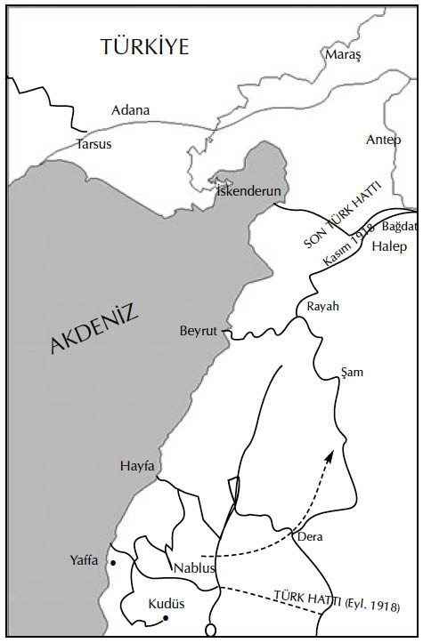

XIX
Seyahatin sonlarına doğru yaklaşıldığında, Mustafa Kemal hedefine ulaşmak için gittikçe daha fazla baskı yapmaya başlamıştı. Sonunda bir gün, Berlin’deki Adlon Oteli’nde Vahdettin’den özellikle samimi olarak konuşmasına izin vermesini istedi.
“Eğer siz de uygun görürseniz,” dedi Mustafa Kemal, “yaşamımı sizinkiyle birleştirecek bir şey önermek istiyorum.”
Vahdettin sözüne devam etmesi için başını salladı.
“Bir ordunun kumandasını almayı talep edin. Bütün Alman prensleri ordulara kumanda ediyor. Türk Veliahtı da kumanda etmeli. Enver’in bunu önermemesi şerefinizi ayaklar altına alması anlamına gelen bir hakarettir. Sonra da beni haşmetmaabın kurmay başkanı yapın.”
“Hangi ordunun kumandasını alayım?” diye sordu Vahdettin.
“Beşincinin” cevabını verdi Mustafa Kemal; bu ordunun İstanbul ve çevresindeki bölgelerin denetimini elinde bulundurduğunu ve herhangi bir siyasal bunalımda belirleyici bir etken olduğunu düşünüyordu.
“Beni reddedecekler” dedi Vahdettin.
“Hiç fark etmez! Onlara mücadele edecek bir kişiliğinizin olduğunu, görmezlikten gelinemeyeceğinizi göstermiş olursunuz” karşılığını verdi Mustafa Kemal.
“İstanbul”a döner dönmez,” dedi Vahdettin, “bunu düşüneceğiz.”
ihtiyat, Vahdettin’in en belirgin özelliğiydi. Altmış yıllık saray yaşamından sonra aşırı ihtiyatlı olmaktan doğan bir kas tembelliğinden muzdaripti. Mustafa Kemal’den ve onun şiddetli, ısrarcı kişiliğinden ürkmüştü. Enver’e karşı kullanmak için ondan yararlanabilirdi; ancak, kendisini bu tayfun gibi adamın ellerine bırakmayacaktı. Dahası, saray yaşamı Vahdettin’in iliğini kurutmuştu. Vahdettin bir korkaktı.
Dönüş yolculuğunda Mustafa Kemal geleceğe ilişkin planlar yapmaya başladı. Veliaht onu dikkatle dinlemişti. Ancak, İstanbul’a henüz varmışlardı ki Mustafa Kemal ciddi bir biçimde hastalandı.
Sofya’da karşılaştığı şarlatan bir hekimin kendisini tedavi etmesine izin vermiş ve henüz iyileşememişti. O zamandan beri de kendisine hiç dikkat etmemişti. Kendisini hiç esirgemeden fiziksel ve zihinsel çabaya sürmüş, etkin hizmette yorulmak bilmeden çalışmıştı. Bu süre içinde zaman zaman kendisini çok fazla içkiye ve çılgınca sefahate de vermişti.
Hastalık şimdi böbreklerine vurmuştu. Bir ay boyunca tarifsiz acılar içinde yatakta kıvrandı. Sonunda doktorlar onu önce Viyana’ya, ardından bir kür için Karslbad’a gönderdiler.
Yoğun acıyla birlikte gelen hastalık, içinde bulunduğu duygusal depresyonla el ele vermiş, böylece Mustafa Kemal’in umutsuzluğun gayya kuyularına batmasına yol açmıştı. Bütün bunlar geçtiğindeyse, artık ilgi ve enerjisini yitirmiş durumdaydı. Temmuzda Padişah’ın öldüğünü ve Vahdettin’in tahta çıkarıldığını duydu. Bu haber bile eyleme geçmesi yönünde onu güdüleyemedi.
İstanbul’dan geriye dönmesini öğütleyen çok sayıda mektup alıyordu. ittihat ve Terakki Cemiyeti’nin muhaliflerinden olan izzet Paşa, Padişah’ın yaver-i ekremi olmuştu; Enver’den başkumandan vekili unvanı geri alınmıştı; Vahdettin dişlerini göstermeye başlıyordu.
Yeni Padişah’a bir kutlama telgrafı göndermek dışında, Mustafa Kemal herhangi bir eyleme girişmek için kendisini çok bitkin hissetmekteydi. Biri izzet Paşa’dan olmak üzere, arkadaşlarından daha acil mektuplar almaya başladı. Hâlâ çok hasta olduğu halde, olağanüstü bir çabayla geriye dönme kararı aldı ve İstanbul’a doğru yola çıktı. Yolda, o sıralarda çok yaygın bir bulaşıcı hastalık olarak bütün Avrupa’yı kasıp kavururken binlerce insanı öldüren ispanyol gribine yakalandı. 1918 Temmuz’unun sonlarında İstanbul’a vardığında hâlâ bitkin ve hastaydı.
Mustafa Kemal cesaretini hiçbir zaman yitirmemiş; soğukkanlılığını ve metanetini korumuştu. Onun itici gücü, inanılmaz enerjisiydi. Tekrar İstanbul’a geldiğinde dostları ve düşmanlarının arasında kendisini toparladı. Süratle iyileşmeye başladı. Eski tutkularıyla birlikte kendisi de canlandı. Artık Padişah olduğuna göre, Vahdettin’le yapmış oldukları projeleri mutlaka hayata geçirmesinin gerekli olduğuna karar verdi.
Yeni Padişah onu büyük samimiyet gösterileriyle kabul etti. Vahdettin’in bu tavırda onun sigarasını yakacak kadar ki, bu Türk adetlerine göre neredeyse hürmetkarane bir nezaketin belirtisidir ileri gitmesi, Mustafa Kemal’i serbestçe konuşmaya teşvik etti.
Eski tasarısını etraflıca açtı. “Felâket tanı önümüzdedir,” dedi. Padişah ordunun denetimini ete almalıydı; Enver ve Almanları iktidarda okluğu sürece. Padişah yalnızca bir ad, bir kukladan ibaret kalacaktı; Enver’i azletmeli ve Almanları ülkelerine göndermeli, Mustafa Kemal’i kurmay başkanı yapmalı ve Türkiye’yi yüz yüze olduğu yıkımdan kurtarmalıydı; Alman ittifakından çekilmeli ve -çok geç olmadan- bir an evvel ayrı bir barış anlaşması yapmalıydı.
“Sizinle aynı görüşleri paylaşan başka subaylar da var mı?” diye sordu, Vahdettin.
“Çok sayıda, efendim” cevabını verdi Mustafa Kemal; bununla birlikte Vahdettin hiçbir söz vermedi.
ikinci görüşmelerinde de Mustafa Kemal daha fazla bir şey elde edemedi. Üçüncü görüşmede ise görüşlerini daha da şiddetle savundu. Onun huzurundayken kendini bunca zamandır hedeflediği noktaya son derece yaklaşmış hissediyordu, Eğer Vahdettin’i ikna etmeyi başarırsa en tepeye ulaşacaktı; tutkuyla istediği güce kavuşacaktı; o zaman da Enver’i, o lanet olası Enver’le bütün avenesini kovacaktı.
Sultan’ı ikna etmek için konuştukça heyecanı büyüyor, tutkulu hatta meydan okuyan bir hal alıyordu. Vahdettin cevap vermeye başladı. Değil protokol, nezaket kurallarını bile bir tarafa bırakan Mustafa Kemal, konuşmasını sürdürüp Padişah’ın sesini bastırdı. Sözlerini tamamladığında Vahdettin biraz öfkeli bir tonda, kelimelerin üzerine basarak, şunları söyledi:
“Ben bütün düzenlemeleri Enver ve Talat Paşa hazretleriyle yaptım.” Sonra da onun huzurundan çıkmasına izin verdi.
Gerçek şuydu ki Enver, Padişah’ı tehdit etmişti. Vahdettin, eniştesi ve başdanışmanı olan Damat Ferit Paşa’yla görüşmüş, ondan akıl almıştı. Enver ve ittihat ve Terakki Cemiyeti’yle derhal mücadeleye girecek kadar güçlü olmadığına ve Mustafa Kemal’in bu konuda ona yardım edecek kadar taraftarı olmadığına karar vermişlerdi. Henüz hiçbir riski göze alamayacak kadar temkinliydi. Mustafa Kemal, dışarıda bırakılmalıydı.
Mustafa Kemal, o an delice bir öfkeyle sarsıldı. Enver yine onu yenmişti. Vahdettin onu terk etmiş, Enver’e dönmüştü; bütün o güzelim tasarıları boşa gitmişti; o an için yapabileceği hiçbir şey kalmamıştı artık; fakat rakiplerinden eninde sonunda öcünü alacaktı.
Enver de hiçbir riske girmiyordu. Mustafa Kemal’i mümkün olduğu kadar çabuk İstanbul dışına çıkarmaya karar verdi. iki hafta sonraki cuma günü selamlık merasiminden sonra, Padişah, Mustafa Kemal’i çağırttı. içlerinde birkaç Alman generalinin de bulunduğu adamlarıyla çevrili olarak, ona son derece sıcak bir tavırla kabul etti. Onu Almanlara “işte Mustafa Kemal Paşa” diye tanıttı, “kendisi üstün yetenekli ve güvenimi kazanmış bir subaydır.”
Mustafa Kemal’e dönerek, “Zatıâlinizi Suriye’ye kumandan tayin ettim” dedi. “Bu cephe hayati önemi haizdir. Bir an önce oraya gitmenizi istiyorum ve sizi bu eyaletin düşman eline geçmemesini sağlamakla görevlendiriyorum. Size verdiğim bu görevi büyük bir başarıyla yapacağınızdan eminim.” Ve huzurundan çıkması için ona izin verdi.
Bekleme odasında, içlerinde Almanların da bulunduğu bir subay kalabalığı vardı. Mustafa Kemal, odadan dışarı çıkarken Enver’le karşılaştı. Padişahın emirlerinin arkasında kimin olduğunu gayet iyi biliyordu.
Bir an için durdu, ona baktı.
“Bravo Enver” dedi sonunda. “Seni tebrik ederim. Sen kazandın. Benim bilgilerime göre, Suriye’deki ordu yalnızca ismen vardır. Beni oraya göndermekle benden mükemmel bir intikam almış oluyorsun.”
iki rakip birbirlerini süzdüler. Neşeyle gülen Enver ufak tefek, çevik, göğsü nişanlarla donanmış, çocuk yüzlü, zarif ve küstahtı. Mustafa Kemal daha uzun ve olgun, yüzü asık ve esmer renkliydi, kaşları büyük bir öfkeyle dolu olan gözlerinin üzerinde çatılmıştı.
O sırada odanın bir köşesinde duran bir Alman generali yüksek sesle:
‘Türk birlikleri hiçbir işe yaramaz. Bunlar sadece kaçmasını bilen hayvan sürüleridir. Doğrusu onlara kumanda eden hiç kimseye gıpta etmem.” diyordu.
Mustafa Kemal şimşek gibi Alman’a doğru döndü, gözleri kızgınlıkla alevlenmişti, tüm vücudu bu öfkeyle titriyordu.
“Ben de bir askerim” dedi. ‘”Bu orduya kumanda ediyorum.” Sesi Türklere olan tutkulu inancıyla titreyen bir trampet gibi tınlıyordu “ Türk askeri asla kaçmaz. Geri çekilme sözünün ne demek olduğunu bile bilmez. Siz, generalim, eğer Türk askerlerinin koştuğunu görürseniz, bunu ancak kendiniz kaçarken görmüş olmalısınız. Kendi korkaklığınızın suçunu Türk askerine yüklemeye nasıl cesaret edersiniz!”
Tam bir ölüm sessizliğine bürünen bekleme odasında bulunan herkes onun sesindeki tutku ile sarsılmışken Mustafa Kemal dimdik yürüdü, Enver’in yanından geçerek çıktı, sarayı terk etti.
Mustafa Kemal, Suriye cephesine vardığında Ağustos’un sonu yaklaşmıştı. Nablus’daki17 karargâhında bulunan yüksek kumandan Liman von Sanders’e -Falkenhein baharda Almanya’ya dönmüştü- görevi hakkında rapor sundu. Liman von Sanders onu tekrar gördüğüne memnun olmuştu. Sonra bütün cepheyi kapsayan bir inceleme gezisi yaptı.
Türklerin, Filistin’i boydan boya aşarak, Yafa’nın on beş kilometre kuzeyinde kalan bir noktadan, kıyı şeridindeki düzlükte bulunan kumsala kadar, Ürdün nehri ve Cüda Dağları’ndan Hicaz demiryolu ile Maan Çölü arasında kalan araziye dek uzanan büyük bir hat boyunca siper içine yerleştirildiklerini gördü. Bu hat, güneyden kuzeye, Suriye’ye uzanan belli başlı bütün yollan kapsıyordu. Hicaz demiryolu Medine’den başlayıp Maan Çölü’nden geçerek Deraa’daki kavşağa ve Şam’a gidiyordu. Rayak’ta yeni açılan bir hattan ikinci bir demiryolu kuzeye, Halep’e gidiyor ve Toros Dağları’nı aşarak Türkiye’ye dek ulaşıyordu.
Mustafa Kemal, 7. Ordu’nun kumandasını Fevzi Paşa’dan devraldı. Fevzi, Erkan-ı Harbiye reisliğine atandığı için İstanbul’a dönen güvenilir, yaşlı bir askerdi. 7. Ordu, Türk hattının merkezinde yer almaktaydı. Miralay İsmet ve Miralay Ali Fuat’ın kumandasındaki iki kolordusu vardı. Sağda, Miralay Refet’in kumandasında kıyıya kadar uzanan mevzileri tutan 22. Kolordu ile birlikte 8. Ordu yer alıyordu. 7 ve 8. Ordular arasında, bu orduya levazım sağlamak için Deraa Kavşağı’ndan batıdaki denize doğru bir yan demiryolu hattı kurulmuştu. Solda ise, 4. Ordu, Hicaz demiryolunu tutuyordu.
Mustafa Kemal, Kafkasya’daki birliklerin durumunu kötü bulmuştu. Buradakiler ise, acınacak haldeydiler. Alayların çoğu kâğıt üzerindeki mevcudunun yüzde onundan azına sahipti. Tümüyle ihmale uğramış, giysileri perişan, bitlenmiş, yiyecek, hatta sık sık olan su kıtlığıyla askerlerin binlercesi dizanteriden ve çölün kavurucu sıcağı altında açlık ve susuzluktan ölüyordu. Maneviyat diye bir şey kalmamıştı. Sadece zor kullanılarak siperlerinde tutulabiliyorlardı. Makineli tüfekler yerleştirilmiş kamyonlardaki muhafızlar asker kaçaklarını gördükleri anda vurmaları emrini almış, devamlı olarak hattın gerisinde devriye geziyorlardı; gene de kaçakların sayısı siperlerdeki askerlerin sayısından daha çoktu.
ingilizler, Türklerin tam karşısında bir siper hattı kurmuşlardı. Büyük bir saldırıya hazırlandıkları belliydi. Birlikleri taze, dinç ve istek dolu askerlerden oluşuyordu. Örgütlenmeleri, donanımları ve sıhhiye hizmetleri mükemmeldi. Bol miktarda kumanyaları, cephaneleri, toplarının yanı sıra mekanize nakliye imkânları ve çok sayıda uçakları vardı. Türklerdeyse hepsi hepsi sekiz uçak ve iki uçaksavar vardı.
Mekke Emiri Hüseyin’in oğlu Emir Faysal’a bağlı Araplar, ingilizlere katılmıştı. “ingiltereli”nin T.E.Lawrence’ın kumandası altında, çölden yaptıkları sürekli akınlarla demiryolu, telgraf ve telefon hatlarını kesiyor, köprüleri uçuruyor, Türk konvoylarını ele geçiriyor, iletişimi kesintiye uğratıyor ve bütün bu yaptıklarıyla Türk birliklerinde güvensizlik duygusunu yerleştiriyor ve yerel halkı da isyana kışkırtıyorlardı.
Mustafa Kemal, bu korkunç keşmekeşi bir tür örgütlenmeye dönüştürebilmek için bir kez daha çılgınca işe koyuldu; ama bu arada hastalandı. Böbrek rahatsızlığı nüksetmişti. Her raporun ingilizlerin taarruza hazırlandığını gösterdiği eylülün ilk iki haftası boyunca Nablus’daki karargâhında çaresizce yatakta kalmaya mecbur oldu.
17 Eylül’de asker kaçağı bir Hintli çavuş 22. Kolordu hattına sığınarak, büyük taarruzun 19 Eylül günü kıyıdan başlatılacağını ihbar etti.
Refet, bu haberi Mustafa Kemal’e iletti. İsmet ve Ali Fuat çağrıldı. Refet bu ihbarın doğru olduğuna inanıyordu. Bu memlekette üç yıldır ingilizlerle çarpışmaktaydı; artık onların usullerini iyice öğrenmişti. Deneyimli bir subay olan Ali Fuat da aynı fikirdeydi. İsmet ve Mustafa Kemal de onlarla görüş birliğine varıp, haberi Liman von Sanders’e ilettiler.

Harita (S.83) 1918 Suriye Seferi Haritası
Not: Bu haritada baskıdaki bozukluk nedeniyle kısaltılmıştır. Homs ve Hama’yı içeren Rayak ve Halep arasındaki bölge, haritada gözükmemektedir. Bkz. Genel Harita
Ne var ki Alman, onların fikrine katılmadı. Hintlilerin bir hile olarak karşılarına yerleştirildiklerine, asıl saldırının batıdan, demiryolundan geleceğine inanmaktaydı ve en iyi birliklerini o yöne sürdü. Hintli ihbarının doğru olduğuna inanan Mustafa Kemal, güçlükle yatağından çıktı. Sancıları hala devam ettiği gibi ateşi de vardı, sıcak boğucuydu; fakat iradesi hastalıktan bile güçlüydü, sırf cesaretle ayakta durabiliyordu. Elindeki olanaklarla tüm hazırlıkları tamamladı ve bütün kumandanlarını da hazır olmaları için uyardı.
19 Eylül gece yarısı, İsmet düşmanın yoğun bombardımana başladığını haber vermek için telefonla onu aradı.
Şafakta İngilizler saldırıya geçti. 7. Ordu’yu güçlü bir cephe saldırısıyla oyalayıp, asıl taarruzlarını 8. Ordu üzerinde yoğunlaştırdılar. Türk hatlarının sağ kanadını aşıp, kıyıya doğru ilerlediler. 22. Kolordu’yu ve 8. Ordu’yu tümüyle temizlediler; az kalsın Liman von Sanders’i de yakalayacaklardı. Türklerin yan cenahını geriye püskürtüp, onların kuzeydeki çekilme hattının önünü kestiler.
Mustafa Kemal, ordusunu Ürdün Nehri’ni arkasına alıp çevirerek, bu şiddetli hücumdan kurtardı; ama adamları bitmişti. Paniğe kapılarak dağıldılar.
Beşinci Gün toplayabildiği tüm askerlerini kişisel idaresine alarak, Ürdün’e geçirmeye hazırlandı.
Bütün ayrıntılarla bizzat ilgileniyordu. Birliğin büyük bölümü nehri geçtiğinde, kendisi de onların izledi. Birkaç dakika sonra, artçılarını yakalayan 11. İngiliz süvari tugayı atlarıyla nehre indiklerinde, onu çok az zaman farkla ellerinden kaçırmışlardı. 4. Türk ordusu demiryolunun yukarısına doğru çekiliyordu. Güçlerinden arta kalanları Deraa İstasyonu’na ulaşmak üzere ıssız çöle doğru sürdü.
Arka ve yan cenahlardan düşman onların peşinden gelmekteydi. İki kez artçıları tek sıra halinde yürürken düşman tarafından yakalanıp çoğu imha edildi. Yürüyüş kollarını makineli tüfekle tarayan, nakliye araçlarıyla topları bombalayan İngiliz uçakları devamlı olarak üstlerinden geçiyordu. Her tarafta sonsuz bir kargaşa hâkimdi; silahlarını, cephanelerini, tüfeklerini, hayvanlarını ve vagonları terk edip çılgın bir şekilde kendini güvenceye almaya çalışan askerler, sürüler halinde koşuşuyorlardı. Uçları tutan Lawrence’ın adamları, içlerindeki bütün o Arap canavarlığıyla, sürüden ayrılıp dağılan askerleri öldürüyor, üst başlarını soyup alıyor, askerlerin organlarını kesiyorlardı.
Bütün bu keşmekeş içinde, bir avuç adamını, kişiliğinin gücüyle bir arada tutan Mustafa Kemal, hemen çevresindeki askerlere cesaret vererek dimdik ilerlemekteydi.
Deraa’dan hiç beklemeksizin ayrılarak, Şam demiryoluna doğru öylesine hızlı bir şekilde çekildi ki İngilizler onlarla teması kaybetti.
Şam’da durdu. Liman von Sanders ona Rayak’ta yeni bir hat kurması emrini yerdi. İsmet’i Şam’da bırakıp Ali Fuat’ı yanına alarak işe koyuldu; ancak, hemen sonra kıyı kentleri halkının düşmandan yana oldukları, İngilizlerin Beyrut’a girdiği ve Rayak’ta kurulan bir hattın düşman tarafından çevrildiği haberleri geldi.
Mustafa Kemal, durumu çarçabuk muhakeme etti. Birliklerin maneviyatı tamamen çökmüştü. Yalnız Türk askerleri değil, yüksek rütbeli subaylar bile canlarını kurtarmak için kaçıyorlardı. Paniği durdurmak için tüm girişimleri boşa çıkmıştı. 4. Ordu’dan bir kolordu kumandanını kaçarken zor durdurmuştu.
Kumandanı karşısına alarak, “Kurşuna dizilmen gerekirdi” dedi, “fakat sana ikinci bir fırsat vermek istiyorum. Rayak’taki18 Ali Fuat’ın kumandasında yerinizi alın ve elinden geleni yapın.”
Kumandan selam verdi. Ertesi sabah gitmişti. Cepheden yine kaçmıştı.
Yüksek kumanda düzeyindeki bu duygusal çöküntüye tanık olduktan sonra, Mustafa Kemal erleri ya da alt rütbeli subayları kurşuna dizdirmeyi gereksiz gördü.
Yapılacak bir yeniden örgütlenme için zamana gereksinim olduğunu anlamıştı. İngilizler henüz biraz uzaktaydılar ve hemen gelecekleri de yoktu. Tüm Suriye’den vazgeçerek bir an evvel üç yüz kilometre ötedeki Halep’e kadar geri çekilmeli ve kuzeyde Türkiye’ye giden yolları kapsayan yeni bir savunma hattı oluşturulmalıydı.
Derhal Liman von Sanders’e gitti.
“Planınız gayet makul,” dedi Alman, “ancak, bu emri ben veremem. Ben yalnızca bir misafirim. Büyük bir felaket olmaksızın Osmanlı İmparatorluğu’nun en büyük dilimlerinden birini düşmana bırakmanın sorumluluğunu üstüme alamam. Bu kararı vermek, siz Türklere, memleketin sahiplerine kalmış bir meseledir.”
“Bütün sorumluluğu ben üzerime alıyorum.” Dedi, Mustafa Kemal. Ve düşmanla tüm çatışmaların durdurulup, Halep’e doğru genel çekilme emrini içeren bir bildiri yayınladı.
En önden gidip Halep’in on mil kuzeyindeki yeni hattı bizzat hazırlattı. Bu hat, büyük Toros dağlarının arasındaki tek sarp geçitten doğruca Türkiye’ye uzanan biricik yolun üzerindeydi. Yan tarafları güvenliydi. Ne asker kaçakları ne de düşman kolay kolay geçemezdi. Arabistan, Filistin, Suriye Türklerin sadece fatih ve idareci olarak ellerinde bulundurdukları Arap ülkeleriydi. Buralar kaybedilebilirdi. Ama burada, bu yeni hat üzerinde Türk çocuklarını arkalarını kayalara vererek, düşmanı kendi ülkelerinden, Türkiye’den uzak tutmaları için savaştıracaktı. Burada anavatan için son nefeslerini verinceye değin çarpışacaklardı.
Dağılmış birlikler hatta ulaştıkça bunları yeni alaylar halinde örgütlüyor ve askerlere yepyeni bir ruh aşılayarak onları düzene sokuyordu. Padişah’a Enver ve çetesinin uzaklaştırılması, yeni bir hükümetin kurulması ve kendisinin Harbiye Nazırı yapılması taleplerini içeren bir telgraf çekti.
Telgrafına hiçbir karşılık gelmediyse de Enver, Talat ve Cemal’in Karadeniz yoluyla yurtdışına kaçtıkları, Rauf ile Fevzi Paşa’nın da içinde yer aldığı yeni bir hükümet kurulduğu haberi ulaştı.19
Lawrence’dan, Araplar vasıtasıyla Mustafa Kemal’e ayrı bir barış anlaşmasının ön görüşmelerinin başlatılması için Türk hükümetine ağırlığını koyması yönünde bir öneri geldi. Mustafa Kemal bunu reddetti. Savaşacaktı. O tehdit altında kalır kalmaz, diğerleri gibi kaçacak bir korkak değildi. Mevzilerini iyice sağlamlaştırmak için hiç durmaksızın çalışıyordu.
Başlangıçta Halep halkı sakin ve sessizdi. Ama İngiliz öncü birlikleri yaklaştıkça düşmanca ve acımasızca davranmaya başladılar.
Mustafa Kemal, kentin merkezindeki Baron Oteli’nde kalıyordu. Bir keresinde yanında şoföründen başka kimse olmaksızın20 otomobiliyle dairesinden dönerken çevresi bir sokak köpeği sürüsü gibi hırlayarak ona bağırıp çağıran bir güruh tarafından sarıldı. Elindeki kırbaçla onları uzaklaştırdı; kendisini izlemeleri üzerine onlara para ve silah sözü vermek zorunda kaldı.
Ertesi sabah korkunç bir patırtı duyup oteldeki odasının balkonuna çıktı. Otelin önündeki sokaklar tehditkâr bir kalabalıkla dolmuştu. At üstünde doğudaki çölden gelen Araplar kente doluşmuşlardı.
Kaybedilecek hiç zaman kalmamıştı. Kenti boşlatarak Kitma’daki karargâhını kaldırıp, kurduğu yeni hattın gerisine nakletti ve yaklaşmakta olan taarruzu karşılamaya hazırlandı.
26 Ekim günü düşmanla temas kurmak üzere hızla ilerleyen ilk İngiliz öncü birlikleri göründüler. İki Hintli alayı olan Jodipore ve Mysore süvari birliği Hari Tan köyü yakınlarında Mustafa Kemal’in hattına saldırdılar.
Mustafa Kemal doğruca köye gidip ateş emrini bizzat verdi. Cesaretlerini yeniden kazanmış olan Türkler çok iyi savaştılar. Hintliler ağır kayıplara uğrayıp dağıldılar ve takviye istediler. Türkler yaklaşık on beş kilometre kadar kuzeyde önceden hazırlanmış mevzilerine çekildiler.
Her iki taraf da bekleyiş halindeyken, İstanbul’dan hükümetin Mondros’ta bir ateşkes imzaladığı haberi geldi.
Bütün Almanların derhal Almanya’ya dönmeleri talimatı verildi. Adana’daki bir otelde Mustafa Kemal, Liman von Sanders’den Güney Türkiye’deki tüm birliklerin kumandasını devraldı.
İki erkek bir masada karşılıklı oturmaktaydılar. Devir teslim merasiminin formalitelerini yerine getirmişlerdi. Mustafa Kemal artık ev sahibiydi; Liman von Sanders artık onun üstü olma konumunu yitirmişti. O, artık Mustafa Kemal’in konuğuydu.
Bu mutlak yenilgi saatinde, birbirlerine söyleyecek fazla bir şeyleri kalmamıştı. Her ikisi de cesur erkekler, metin ve deneyimli askerlerdi. Her ikisi de hassas ve mağrur kişilerdi. Birbirlerine karşı ifade etmekte güçlük çektikleri derin bir saygı beslemekteydiler.
Veda ederken “Ekselans,” dedi Liman von Sanders sonunda, “Sizi Anafartalar’daki kumandanlığınızdan beri tanıyorum. Yeteneklerinizi en baştan beri fark edebildiğim için kendimle gurur duyuyorum. Bu süre içinde sık sık anlaşmazlığa düştüğümüz oldu, gene de iyi birer dost olduk Şu andaki tek avuntum, kumandayı sizin yetkin ellerinize bırakıyor olmamdır.”
Türkiye yenilmişti; ancak, artık bu cephenin tek kumandanı ve eskisi kadar gözü pek ve hırçın olan Mustafa Kemal, düşmanı hattından ileriye geçilmiyordu. Düşmanla yapılan barış görüşmelerinde en ufak ayrıntıyı bile uzun uzun tartışıyordu. Her şeyi her fırsatta erteliyordu. İngilizler İskenderun’u işgal etmek isteyince buna karşı koydu ve oradaki karargâha direnme emrini vererek saldırı tehdidinde bulundu.
Sadrazam İzzet, gönderdiği telgraflarla ona önce emir sonra rica ederek İngilizlere yolu açmasını istediğinde, “Merhamet dilenmemeliyiz. Eğer bunu yaparsak, toptan yok olacağız.” karşılığını verdi.
Kurduğu hattı güçlendirmeye devam etti. Subaylarını yanlarında silah ve cephaneleriyle birlikte adam toplayıp çeteler kurmaları için dağlara gönderdi. Düşmanın Türkiye’ye girmesini bir şekilde engelleyecekti: En kötü olasılıkları göz önüne alarak, gerektiği takdirde dağlarda gerilla savaşı vermek üzere hazırlıklar yapıyordu.
İstanbul’da yeni bir hükümet kurulmuştu. 21Fethi, Rauf ve Fevzi Paşa, hepsi kabinedeydiler.22 İsmet, Harbiye Nezareti Müsteşarlığı’na atanmak için İstanbul’a çağrıldı.23 Mustafa Kemal terkedilmiş ve bir kenarda unutulmuştu. Buna çok kızıyor, ancak elinden hiçbir şey gelmiyordu.24
Ansızın İzzet telefonla aradı.25
Padişahla tartıştığını ve istifa etmeye karar verdiğini söyledi. Bir İngiliz dostu olan yaşlı Tevfik Paşa Sadrazam olmuştu. İzzet, Mustafa Kemal’in biran önce dönmesini istiyordu. Yardımına ihtiyacı vardı.
17 Baalbek olmalıydı: a.g.e. s.66 (ç.n.)
18 Baalbek olmalıydı: a.g.e. s.67 (ç.n.)
19 İzzet Paşa Hükümeti (14 Ekim 1918-11 Kasım 1918) Bahriye Kurmay Başkanı olan Rauf (Okyar) Bey. Bahriye Nazırı olarak kabinede yer alıyordu. Ancak, Fevzi Paşa kabinede değildir. Dâhiliye vekili olarak eski Sofya Sefiri Fethi Bey bulunmaktadır. Mütakere kabineleri için bkz. Sina Aksin, İstanbul Hükümetleri ve Milli Mücadele. 1976 (ç.n.)
20 Aslında yanında Tahsin Bey, Yaveri Cevat Abbas Bey de vardır. Yalnız denmesinden kasıt koruyacak askeri bir kuvvet bulunmadığı olmalıdır. Atatürk’ün Hatıraları, s.69 (ç.n.)
21 Birinci Tevfik Paşa Kabinesi (11 Kasım 1918-12 Ocak 1919). (ç.n.)
22 Yeni kabinede bu üç isim de yer almamıştı. Ilımlı Tevfik Paşa kabinesi, Abdülhamit dönemindeki Padişah kabinelerine benzer niteliktedir. Bu nedenle dirayetli askerlerin bu kabinede yer alması zaten mümkün değildi. Bu konuda ayrıntılı bilgiler için bkz. Sina Aksin, a.g.e. (ç.n.)
23 Böyle bir çağrının yapıldığını, İzzet Paşa’nın Sadrazamlığı döneminde, Rauf Bey’e söylediği anlaşılıyor. Sözü geçen mevki. Genel Kurmay İkinci Başkanlığı idi: 3. Ordu kumandanı olan Miralay İsmet Bey, 24 Ekim’de Harbiye Nezareti Müsteşarlığı’na atandı. Aksin, a.g.e., s.75 (ç.n.)
24 İlk Müzakere Kabinesi’nin Bahriye Nazırı olarak Rauf, Mustafa Kemal’i İstanbul’a çağırması için İzzet Paşa’ya sürekli baskı yapıyor; ancak Paşa, büyük bir olasılıkla Vahdettin’in emriyle bahaneler bulup işi savsaklıyordu; Aksin, a.g.e., s. 74-75 (ç.n.)
25 Atatürk’ün Hatıraları adlı kitapta, İzzet Paşa’nın Mustafa Kemal’i “makine başına çağırdığı”, yani telgraf aracılığıyla aradığı ifadesi yer alır. (ç.n.)